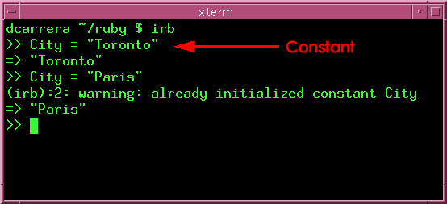

A variable is a name that Ruby associates with a particular object. For example:
city = "Toronto"
Here Ruby associates the string "Toronto" with the name (variable) city.
Think of it as Ruby making two tables. One with objects and another with names for them. Then think of Ruby drawing an arrow from city to "Toronto".
Whenever Ruby encounters city, it will follow the arrow and arrive at the string "Toronto".
| Warning: Variable names must begin with a lowercase letter. |
You can manipulate variables in exactly the same way that you would manipulate the objects that they represent.
The good thing about variables is that you can keep track of information more easily. Suppose that you were given these instructions:
Sure, you could write out a long expression to do this. It is much easier to write:
In the example above, you saw the expressions:
num1 = num1 / 5 num2 = num2 - num1
These kinds of expressions are very common, so Ruby offers you some shortcuts:
| Example | Shortcut | Meaning |
|---|---|---|
| var = var + 2 | var += 2 | Add 2 to var |
| var = var - 3 | var -= 3 | Subtract 3 from var |
| var = var * 6 | var *= 6 | Multiply var by 6 |
| var = var / 2 | var /= 2 | Divide var by 2 |
| var = var** 3 | var **=3 | Cube var |
| var = var % 4 | var %= 4 | var modulo 4 |
So the above example could be written as
Constants are like variables. Except that you are tellig Ruby that their value is supposed to remain fixed. If you try to change the value of a constant, Ruby will give you a warning.
You define constants just like variables, except that the first letter is upperscase.

| Note: Though City is a "constant", its value still changed. Being a constant only means that Ruby will warn you if you change its value. See below. |
Do you think that shortcuts work for strings too? Try this:
var = "hello " var = var + "world" var += "world"
What do you think this will do?
string = "hi" string *= 3
Try it. How would you explain this result to a younger sibbling?